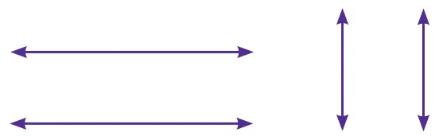

Exercise 4.2
- Draw a line segment \(AB = 7\) cm and mark a point P on it. Draw a line perpendicular to the given line segment at P.
- Draw a line segment \(LM = 6.5\) cm and take a point P not lying on it. Using a set square construct a line perpendicular to LM through P.
- Find the distance between the given lines using a set square at two different points on each of the pairs of lines and check whether they are parallel.

- Draw a line segment measuring 7.8 cm. Mark a point B above it at a distance of 5 cm. Through B draw a line parallel to the given line segment.
- Draw a line and mark a point R below it at a distance of 5.4 cm Through R draw a line parallel to the given line.